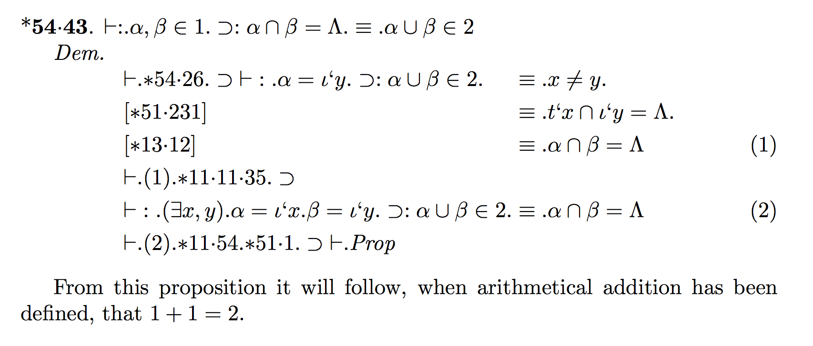
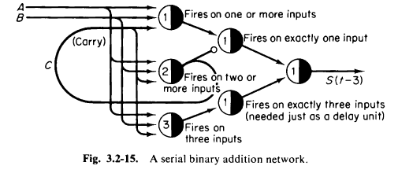
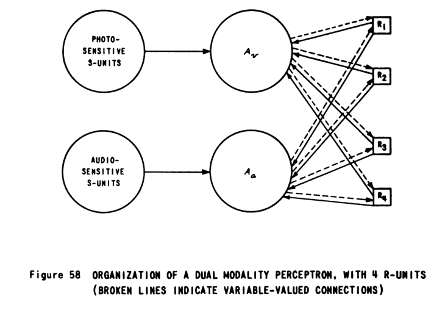
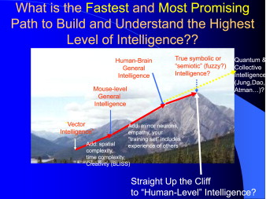

Abstract
The backpropagation algorithm could have been invented by a slight generalization of the adjoint method, or the costate method, which was widely known among control theorists in the 1950s. Hybrid control theory leads almost inexorably to the backpropagation algorithm.
Seppo Linnainmaa’s claim of priority is his 1970 master thesis – in Finnish, and never published. An English paper in 1976 was published that may have been relevant to automatic differentiation research, but not to neural network research. He has priority but no paternity.
Paul Werbos’ claim of priority is that he developed the backpropagation algorithm in 1971, but was frustrated at every turn whenever he tried publishing it, not managing until around 1982. After that, it was taken up by many neural network researchers. He has priority and paternity.
David Rumelhart reinvented it in 1982. As he freely admits, he didn’t cite previous work because they were so obscure. The 1986 paper he coauthored (Rumelhart, Hinton, and Williams 1986) became popular enough that nobody would need to reinvent it again. He has no priority, but paternity. As usual in science, it is not the first inventor who gets the credit, but the last re-inventor.
I was puzzled by how none of the first wave of neural network researchers developed backpropagation. I still am. My guesses are, from most to least likely:
- Bad luck.
- They were misled by the contemporary understanding of real neurons, and the McCulloch–Pitts model. Back then everyone “knew” that real neurons are 0-1 spike generators.
- They thought of machine learning as just another way to construct boolean functions, rather than smooth functions, so they kept using the 0-1 activation function.
- They distrusted gradient descent, because it would get stuck at local optima. If only they had had cheap compute and data to experiment with, they would have discovered the “blessing of scale”: local optima are almost as good as the global optimum.
- They attempted to achieve parity with digital computers, which were discrete.
- They attempted to distance themselves from cybernetics, which included optimal control theory.
The backpropagation algorithm
To set the stage, we should at least quickly derive the backpropagation algorithm. In one sentence, backpropagation is an algorithm that calculates the gradient of every parameter in an acyclic directed graph with respect to a single final parameter.
The graph can be finite or infinite, but in all cases, its acyclic directedness allows us to assign a “logical time” to each node.1 Some nodes are independent variables: they point to other nodes, but no nodes point to them. Other nodes are dependent. If we know the independent variables, we can propagate their values forward in logical time and determine the values of every node. This is the “forward pass”. Backpropagation goes backwards in logical time.
1 An existence proof that anything we might care about must have a logical time: Anything that happens, happens in the real world. The real world has a single direction in time. Therefore, any computation that can happen, must have a logical time that is identical with physical time.
Note that logical time does not have to coincide with physical time. For example, to model goal-directed behavior, it might be better to put the physical future into the logical past.
We use the convention of putting derivatives on the rows. So for example, for \(f: \mathbb{R}^2\to\mathbb{R}^2\), we have
\[ \nabla_x f = \frac{df}{dx} = \begin{bmatrix} \frac{df_1}{dx_1} & \frac{df_1}{dx_2} \\ \frac{df_2}{dx_1} & \frac{df_2}{dx_2} \end{bmatrix} \]
This convention simplifies a lot of equations, and completely avoids transposing any matrix.
Discrete logical time
Consider an acyclic directed graph with a finite number of nodes. Each graph node is a finite-dimensional real vector, though they may have different dimensions. We order the acyclic graph on the number line, so that each node depends only on the earlier nodes. Now denote the graph nodes as \(x_0, x_1, \dots, x_T\). By our ordering, \(x_1\) depends on only \(x_0\), and \(x_2\) depends on only \(x_1, x_2\), and so on:
\[ \begin{aligned} x_0 &= x_0 \\ x_1 &= f_1(x_0) \\ &\cdots \\ x_T &= f_T(x_0, x_1, \dots , x_{T-1}) \end{aligned} \]
Now we perform an infinitesimal perturbation on every one of its independent variables. A forward propagation then causes an infinitesimal perturbation on every variable, independent or dependent. Denote these as \(dx_0, dx_1, \dots, dx_T\). We can now compute the derivative of \(dx_T\) with respect to every other variable by backpropagating the perturbation. Suppose we can see only \(dx_T\), then the change in \(x_T\) due to \(dx_T\) is the identity. That is,
\[ \frac{dx_T}{dx_T} = I \]
Now suppose we can see only \(dx_{T-1}\), then the change in \(x_T\) due to \(dx_{T-1}\) can only come from the final step in the forward propagation. Therefore
\[ \frac{dx_T}{dx_{T-1}} = \nabla_{x_{T-1}} f_T(x_0, x_1, \dots , x_{T-1}) \]
Similarly, the change in \(x_T\) due to \(dx_{T-2}\) can come from either directly changing \(x_T\) or from changing \(x_{T-1}\) and thereby changing \(x_T\). Therefore,
\[ \frac{dx_T}{dx_{T-2}} = \nabla_{x_{T-1}} f_{T}(x_0, x_1, \dots , x_{T-2}) + \underbrace{\frac{dx_T}{dx_{T-1}}\nabla_{x_{T-2}} f_{T-1}(x_0, x_1, \dots , x_{T-2})}_{\text{the chain rule}} \]
This generalizes to the rest of the steps.
The above computation is fully general, but this makes it inefficient. In practical applications of backpropagation, the computation graph is usually very sparse, meaning that each \(x_t\) only directly influence a few more nodes down the line. In standard neural networks, typically \(x_{t}\) only directly influences \(x_{t+1}, x_{t+2}\). Thus, sparsity is vital for backpropagation to be relevant.
As a side note, we could in fact compute all derivatives, not just the first, in one single backward pass. Other than the second derivatives \(\nabla^2_{x_t}x_T\), there is rarely any use for the other derivatives, such as \(\nabla_{x_t}\nabla_{x_s}x_T, \nabla^3_{x_t}x_T\), etc. The second derivative was occasionally used for neural networks circa 1990, with the further simplification that they only keep the positive diagonal entries of \(\nabla^2_{x_t}x_T\) and set all other entries to zero (LeCun 1989).
Continuous logical time
Consider the problem of controlling a car along a highway. We discard all details, so that the car is just a single dot on a line, and the state of the car is determined by its speed and velocity. To avoid waiting forever, we require time \(t\in [0, T]\). Write the state variable as follows:
\[ x_t = (\text{location at time }t, \text{velocity at time }t) \]
It might be confusing to use \(x_t\) for the state at time \(t\), instead of for location, but it makes the notation consistent.
Suppose the only thing we can influence is how much we press the pedal. Write \(u_t\) to be the resulting acceleration we inflict on the car by pressing on the pedal. Further, assume that the car is slowed down by friction that is proportional to velocity. We then have:
\[ \dot x_t = f(x_t, u_t) \]
where \(f(x_t, u_t) = (x_{t, 1}, -\mu x_{t, 1} + u_t)\) is the dynamics equation of the system, and \(\mu\) is the friction coefficient.2
2 To allow for time-varying dynamics, simply replace \(f(x_t, u_t)\) with \(f(t, x_t, u_t)\). This clutters the notation without involving new ideas.
Now, we can draw the computation graph as before. The computation graph has a continuum of nodes, but it has a very simple structure. The graph has two kinds of nodes: the \(x_t\) nodes and the \(u_t\) nodes. Its independent variables are \(x_0\) and all the \(u_t\) nodes. Each \(x_{t+dt}\) depends on only \(x_{t}\) and \(u_t\). This makes the two propagations particularly simple.
The forward propagation is obtained by integration, which we can unwrap into a form resembling the case of the discrete logical time:
\[ \begin{aligned} x_0 &= x_0 \\ x_{dt} &= x_0 + f(x_0, u_0) dt \\ &\cdots \\ x_{T} &= x_{T-dt} + f(x_{T-dt}, u_{T-dt}) dt \\ \end{aligned} \]
The backpropagation is similarly obtained. By inspecting the computation graph, we can see that each \(u_t\) only directly influences \(x_{t+dt}\), giving
\[ \frac{dx_T}{du_t} = \frac{dx_T}{dx_{t+dt}} \nabla_{u_t}f(x_t, u_t) dt. \]
It remains to compute \(\frac{dx_T}{dx_t}\). This can be found by backpropagation too, since each \(x_t\) only directly influences \(x_{t+dt}\), we have
\[ \frac{dx_T}{dx_t} = \frac{dx_T}{dx_{t+dt}} \left[I + \nabla_{x_t} f(x_t, u_t) dt\right]. \]
If we denote the gradient as \(g_t := \frac{dx_T}{dx_t}\), then we find an equation for \(g_t\):
\[ g_t = \left[I + (g_t + \dot g_t dt) \nabla_{x_t} f(x_t, u_t) dt\right]\implies \dot g_t = -g_t\nabla_{x_t} f(x_t, u_t) \]
This equation bottoms out at the end time, \(t=T\), for which \(g_T = \frac{dx_T}{dx_T} = I\). Thus we have the costate equations:
\[ \begin{cases} g_T &= I \\ \dot g_t &= - g_t \nabla_{x_t} f(x_t, u_t) \end{cases} \]
which must, as you can see, be integrated backwards in time – backpropagation again! Indeed, control theory practically compels us to find backpropagation.
Hybrid logical time
When the computation graph has both nodes with discrete logical times and nodes with continuous logical times, we call such a system as having hybrid logical time.3
3 The name “hybrid” comes from “hybrid control theory”, which are systems with both discrete changes, or jumps, and continuous changes, or flow. They appear whenever a digital device is used to control a continuous system, such as a computer piloting an airplane.
The idea can be illustrated by the fundamental problem in control theory: how to optimize control? You cannot optimize without optimizing a real number, so we write down the number as \(J\), representing the “cost” of the trajectory. For example, in driving a car, we might want to optimize comfort, time-until-arrival, and fuel cost. We can then write \(J\) down as something like
\[ J = \underbrace{(x_{T, 0} - x_{goal})^2}_{\text{location should be at the goal location at the end time}} + \underbrace{(x_{T, 1} - 0)^2}_{\text{speed should be zero at the end time}} + \int_0^T u_t^2 dt \]
More generally, the objective to be optimized is in the form
\[ J = A(x_T) + \int_0^T L(x_t, u_t)dt \]
for some real-valued functions \(A, L\).
Of course, we can care about more than the state at the last time-step. We can care about multiple time-steps \(t_0, t_1, \dots, t_n\) by writing down a cost function \(J = \sum_{i=0}^n A_i(x_{t_i}) + \int_0^T L(x_T, u_T)dt\), but this merely creates complications without introducing new ideas. Even more ornate computation graphs, weaving together multiple strands of continuous and discrete logical times, can be backpropagated in the same way without involving new ideas.
Define the costate \(\lambda_t := \nabla_{x_t} J\), then the costate backpropagates as:
\[ \lambda_t = L(x_t, u_t) dt + \lambda_{t+dt}(I + \nabla_{x_t}f(x_t, u_t)dt) \]
and by simplifying, we have the costate equation:
\[ \begin{cases} \lambda_T &= \nabla_{x_T} A(x_T) \\ \dot \lambda_t &= - \nabla_{x_t} L(x_t, u_t) - \lambda_t \nabla_{x_t} f(x_t, u_t) \end{cases} \]
which can be solved by integrating backward in time.
Once we have obtained all the costates, we can compute \(\nabla_{u_t} J\). Since \(u_t\) can only influence \(J\) either directly via \(L(x_t, u_t)\) or indirectly via \(x_t\), we have
\[ \nabla_{u_t} J = \left[\nabla_{u_t}f(x_t, u_t) \lambda_t + \nabla_{u_t}L(x_t, u_t)\right]dt \]
Note that \(\nabla_{u_t} J\) is an infinitesimal in \(dt\). This is qualitatively different from \(\nabla_{x_t}J = g_t\), which is not an infinitesimal, but a mere matrix. Why is it so? The simplest example suffices to illustrate.
Consider a mass point sliding on a frictionless plane. When we perturb \(x_t\), we push it to the side by \(\delta x_{t, 0}\) and also change its velocity by \(\delta x_{t, 1}\), and so at the end time \(T\), we would have changed \(x_T\) by \((\delta x_{t, 0} + (T-t)\delta x_{t, 1}, \delta x_{t, 1})\), which is the same order of infinitesimal. Now, we can control the mass point by applying a force \(u_t\), which gives us the dynamics equation
\[ \dot x_t = (x_{t, 1}, u_t) \]
To “perturb” \(u_t\) by \(\delta u_t\) does not make sense on its own, as a “spike” of \(\delta u_t\) that lasts for zero amount of time does not show up in the system trajectory. One can apply a durationless jump in state, but one cannot apply a durationless force. Therefore, it only makes sense to perturb \(u_t\) by \(\delta u_t\) and persist the perturbation for \(dt\) time. This perturbs the state at the end time by \(((T-t)\delta u_t dt , \delta u_t dt)\), which means that \(\nabla_{u_t}x_T\) is proportional to \(dt\).
Optimal control theory
An optimal trajectory must have \(\nabla_{u_t} J = 0\), since otherwise, we could shave off a little piece of cost by giving \(u_t\) a little boost in the opposite direction (infinitesimal gradient descent!). This gives us two equations that any optimal trajectory must satisfy
\[ \begin{cases} - \dot \lambda_t &= \nabla_{x_t} L(x_t, u_t) + \lambda_t \nabla_{x_t} f(x_t, u_t) \\ 0 &= \nabla_{u_t} L(x_t, u_t) + \lambda_t \nabla_{u_t} f(x_t, u_t) \\ \end{cases} \]
Now, what is the effect of perturbing \(u_t\) by \(du_t\)? It would perturb \(x_{t+dt}\) by \(\nabla_{u_t} f(x_t, u_t) du_t dt\), a second-order infinitesimal. Consequently, it would perturb \(x_T\) by only a second-order infinitesimal, and thus \(\lambda\) too. Therefore, we have
\[ \nabla_{u_t}\lambda_t = 0 \]
giving us simplified equations for optimality:
\[ \begin{cases} - \dot \lambda_t &= \nabla_{x_t} L(x_t, u_t) + \lambda_t \nabla_{x_t} f(x_t, u_t) \\ 0 &= \nabla_{u_t} (L(x_t, u_t) + \lambda_t f(x_t, u_t)) \\ \end{cases} \]
Unfortunately, we cannot simplify the first equation similarly because \(\nabla_{x_t}\lambda_t \neq 0\). Still, it seems \(L(x_t, u_t) + \lambda_t f(x_t, u_t)\) should be an important quantity:
\[ H(x_t, u_t, \lambda_t) := L(x_t, u_t) + \lambda_t f(x_t, u_t) \]
The letters are meaningful. \(L\) is the “Lagrangian”, and \(H\) is the “Hamiltonian”. Indeed, classical Hamiltonian mechanics is a special case of optimal4 control theory.
4 To be completely precise, it is a necessary but insufficient condition for optimality. Just like how a function can have zero derivatives on the peaks, valleys and shoulders, a trajectory can have zero functional derivative, even if it is the best, the worst, and the … shouldered? In jargon, we say that those conditions are first order optimality conditions, since they use only the derivative, not the second-derivative.
If we interpret economically the quantities, then \(J\) is the cost of the entire trajectory, \(\lambda_t\) is the marginal cost of the point \(x_t\) in the trajectory, and \(L(x_t, u_t)\) is the cost-rate at time \(t\). The second equation of optimality \(\nabla_{u_t} H(x_t, u_t, \lambda_t) = 0\) states that when the trajectory is optimal, the marginal cost of control is zero: there is no saving in perturbing the control in any direction.
Therefore, define the “optimized” Hamiltonian and the optimized control relative to it:
\[ \begin{cases} H^*(x_t, \lambda_t) &:= \min_{u_t}H(x_t, u_t, \lambda_t) = \min_{u_t} \left(L(x_t, u_t) + \lambda_t f(x_t, u_t)\right) \\ u^*(x_t, \lambda_t) &:= \mathop{\mathrm{argmin}}_{u_t}H(x_t, u_t, \lambda_t) \end{cases} \]
Then, by Hotelling’s lemma, we derive the Hamiltonian equations of motion:
\[ \begin{cases} - \dot \lambda_t &= \nabla_{x_t} L(x_t, u_t^*) + \lambda_t \nabla_{x_t} f(x_t, u_t^*) &= \nabla_{x_t} H^*(x_t, \lambda_t) \\ \dot x_t &= f(x_t, u_t^*) &= \nabla_{\lambda_t} H^*(x_t, \lambda_t) \\ \end{cases} \]
This is often called the Pontryagin’s maximum principle, as Pontryagin’s school of optimal control theory is based on this principle and its extensions. Control theory was a national security issue during the Cold War, as it was used from the space race to the missile race.
In classical control theory, the equation is sometimes solved in closed form, as in the case of linear quadratic control. When it cannot be solved in closed form, it can still be numerically solved using a continuous form of the Bellman equation. Similar to how the Hamiltonian equations have the alternative form of the Hamilton–Jacobi equation, the Pontryagin equations have an alternative form in the Hamilton–Jacobi–Bellman equation. Possibly, the name “dynamic programming” appears later in Paul Werbos’ invention of backpropagation, which he named “dynamic feedback”.
In economics, one can modify this framework slightly to allow discounting cost over time, yielding theories about “optimal investment” such as the Ramsey optimal growth theory.
Leibniz
The chain rule dates back to Calculus Tangentium differentialis [Differential calculus of tangents], a manuscript by Leibniz dated 1676 November (Child 1917). It says
it does not matter, whether or no the letters \(x, y, z\) have any known relation, for this can be substituted afterward.
In mathematical notation, he found that \(dy = dx \frac{dy}{dx}\), or in his notation, \(\overline{dy} = \overline{dx} \frac{dy}{dx}\), where the overbar denotes the thing to be differentiated. You can read it as a bracket: \(d(y) = d(x) \frac{dy}{dx}\).
He then gave the following examples5:
5 Yes, there is a sign error. No, I’m not going to fix it. He just has to live with his mistakes.
\[ \begin{aligned} & \overline{d \sqrt[2]{a+b z+c z^2}} \text {. Let } a+b z+c z^2=x \text {; } \\ \text{Then} \quad & \overline{d \sqrt[2]{x}}=-\frac{1}{2 \sqrt{x}} \text {, and } \frac{d x}{d z}=b+2 c z \text {; } \\ \text{Therefore} \quad & \overline{d \sqrt{a+b z+c z^2}}=-\frac{b+2 c z}{2 \overline{d z} \sqrt{a+b z+c z^2}} \\ & \end{aligned} \]
McCulloch and Pitts
In the famous paper (McCulloch and Pitts 1943), McCulloch and Pitts proposed that
Because of the “all-or-none” character of nervous activity, neural events and the relations among them can be treated by means of propositional logic. It is found that the behavior of every net can be described in these terms, with the addition of more complicated logical means for nets containing circles; and that for any logical expression satisfying certain conditions, one can find a net behaving in the fashion it describes.
The McCulloch and Pitts paper is difficult to read, and is rooted in early 20th century mathematical logic. In fact, it uses the same abstruse notations of the Principia Mathematica, which is cited in the paper.

The McCulloch and Pitts paper, like the Perceptrons book, is something often cited but rarely read. The best introduction to the McCulloch and Pitts neural network is still (Minsky 1967, chap. 3), which explicitly designs, neuron by neuron, threshold by threshold, how to construct neural networks that perform various tasks, such as simulating arbitrary Turing machines, process signals, perform additions, etc.

Frank Rosenblatt
Frank Rosenblatt is the originator of the term “backpropagation”, or more precisely, “back-propagating error-correction procedure” (Rosenblatt 1962, vol. 55, chap. 13), although it was quite far from our current use of backpropagation. He is the originator of many concepts in neural networks, and he was even popularly famous during his own time. During 1957–1962, he did a lot of the theory and experiments with perceptron networks. Some experiments ran on digital computer simulations, and others on the Mark I Perceptron, a bespoke machine that takes up a whole room.
A perceptron is a function of the form \(\theta(w^T x + b)\), where \(\theta\) is the 0-1 step function, and \(w \in \mathbb{R}^n, b \in \mathbb{R}\) are its learnable parameters. A perceptron network is a network of perceptrons. Rosenblatt experimented with a large number of perceptron network architectures, but most often, he experimented with a certain 2-layered feedforward architecture, which is sometimes called “the perceptron machine”.
The perceptron machine is a machine that computes a function of type \(\{0, 1\}^n \to \{0, 1\}\). Its input layer is composed of units named “Stimulus units” or “S units”. The S units do not perform any computation, but merely pass binary outputs to the hidden layer. In the Mark I perceptron, the S units were 20×20 cadmium sulfide photocells, making a 400-pixel image. The hidden layer is composed of perceptrons named “Association units” or “A units”. Their outputs pass on to the output layer, composed of perceptrons named “Response units” or “R units”.
We can describe the perceptron machine in one equation:
\[ f(x) = \theta\left(b^{R} + \sum_i w^{AR}_i \theta\left((w^{SA, i})^T x + b^{A}_i\right)\right) \]
Rosenblatt proved some mathematical theorems, the most important of which is the perceptron convergence theorem, which shows that assuming the dataset is linearly separable, then the perceptron learning algorithm converges after making a bounded number of errors6. He also performed experiments on the Mark I Perceptron machine, IBM computers, and some other computers.
6 There is another technical assumption on the dataset, but it is omitted for space. Suffice to say it is satisfied for all finite datasets.
His theorems and experiments were exhaustively documented in his book (Rosenblatt 1962). Its breadth is quite astonishing. It contains:
- perceptrons with continuous activation functions (section 10.2);
- perceptron convergence theorem for perceptrons with continuous activation functions that are also monotonic and sign-preserving (page 249);
- perceptron layers with random delay in transmission time (chapter 11);
- layers with connections between units within the same layer, with possibly closed loops (chapter 17–19);
- layers with connections from a later layer to a previous layer (chapter 20);
- residual connections (Figure 42);
- multimodal perceptron networks that learns to associate image and audio inputs (Figure 58);
- program-learning perceptrons (chapter 22);
- perceptron networks that analyze videos and audios (chapter 23).
From our vantage point, we can fairly say that he invented randomization, residual connections, weight initiation schemes, neural Turing machines, recurrent neural networks, vision models, time delay neural networks, multimodal neural networks…

What is even more astonishing is that, as far as I can see, he did not make use of gradient descent learning at all, not even on a single layer like Widrow and Hoff. The perceptron learning rule converges, but only for a single-layered perceptron network on linearly separable data. Thus, when it came to two-layered perceptron networks, he randomly wired the first layer, then froze it, and only adapted the second layer. This would become the focal point of the “perceptron controversy”.
In the chapter where he talked about backpropagation (Rosenblatt 1962, vol. 55, chap. 13), he tried to train both layers in the two-layered perceptron network by extending the perceptron learning algorithm. The algorithm works on each individual perceptron unit, but only if the desired output is known. The desired outputs for the output units are supplied by the experimenter, but the desired outputs for the hidden units could not be known, so Rosenblatt tried some hacks. Essentially, he took the error signals at the output units, and used heuristic rules to “backpropagate the error” to synthesize error signals at the hidden units. The precise details are hacky, and no longer of any relevance.
One last thing about his backpropagation rule: he also discovered the layer-wise learning rate trick. Because his backpropagation algorithm was so hacky, he found that he had to stabilize it by making the first layer learn at a much lower rate than the second.
It is found that if the probabilities of changing the S-A connections are large, and the threshold is sufficiently small, the system becomes unstable, and the rate of learning is hindered rather than helped by the variable S-A network. Under such conditions, the S-A connections are apt to change into some new configuration while the system is still trying to adjust its values to a solution which might be perfectly possible with the old configuration. Better performance is obtained if the rate of change in the S-A network is sufficiently small to permit an attempt at solving the problem before drastic changes occur.
Bernard Widrow and Marcian Hoff
Widrow and Hoff worked on neural networks in the early 1960s. They started with training a single perceptron with gradient descent on the squared loss, then proceeded to spend years trying to train a two-layered network without gradient descent. I know – I cannot make this sound any less puzzling.
The Widrow–Hoff machine, which they called the ADALINE (“ADAptive Linear NEuron”), is a function of type \(\mathbb{R}^n \to \{0,1\}\) defined by
\[ f(x) = \theta(w^T x + b) \]
and here it is again, that dreaded Heaviside step-function that was the bane of every neural network before backpropagation. What was odd about this one is that ADALINE was trained by gradient descent with the squared loss function \(\frac 12 (w^T x + b - y)^2\), which is continuous, not discrete:
\[ w \leftarrow w - \alpha (w^T x + b - y) w, \quad b \leftarrow b - \alpha (w^T x + b - y) b \]
The first ADALINE machine was a box that learned to classify binary patterns on a \(4 \times 4\) grid. It was pretty amusing, as everything was done manually. The patterns were inputted by flipping 16 switches by hand. The error \(w^T x + b - y\) was read from a voltmeter, and the parameters \(w, b\) were individually adjusted by turning knobs controlling rheostats inside the box. They then automated the knob-turning process using electrochemical devices called memistors, though the pattern input \(x\) and the desired output \(y\) were still entered by manual switches.


Widrow recounts an amusing encounter with Rosenblatt:
I just put the pattern in and the Adaline went “phut,” and the needle was reading to the right or to the left. So I just held the adapt button down so some of the cells are plating while others are deplating, depending on the direction of the error signal. Rosenblatt’s students put the pattern into the perceptron. You could see it in the lights on the perceptron. You could hear the potentiometers grinding away. We put another pattern into the Adaline, and it went “blip ,” and there it was, adapted. They put it in the perceptron, and it’s still grinding away. We put in a couple more patterns. Then we test the Adaline and test the perceptron to see whether the patterns are still in there.
They’re in the Adaline. In the perceptron, they’re all gone. I don’t know whether the machine was temperamental or what, but it was difficult to train. I argued with Rosenblatt about that first random layer. I said, “You’d be so much better off if you just took the signal from the pixels and ran them straight into the weights of the second layer.” He insisted that a perceptron had to be built this way because the human retina is built that way. That is, there’s a first layer that’s randomly connected to the retina. He said the reason why you can get something to interpret and make sense of random connections is because it’s adaptive. You can unravel all this random scrambling. What I was trying to do was to not model nature. I was trying to do some engineering.
After the ADALINE showed good behavior, they went on and on trying to train a two-layered ADALINE (“MADALINE”, or “many ADALINE”), which of course could not be trained by gradient descent, because the hidden layer ADALINE units used the Heaviside step function! It is almost inconceivable nowadays, but they simply refused to use a continuous activation function and tried every other trick except that. They ended up with the MADALINE I rule. In short, it was a heuristic rule for synthesizing supervision signals for the hidden layer, much like Rosenblatt’s heuristic rule.7
7 The MADALINE I machine consists of multiple hidden ADALINE units, and a single output layer consisting of a single unit. The output unit merely takes the majority vote from the hidden units. If the desired output is \(+1\), but the actual output is \(-1\), then the machine picks those ADALINE units that are negative, but closest to being positive, and make them update their weights, according to the ADALINE learning rule. It was thought of as a form of “minimal disturbance principle”.
8 Marvin Minsky would approve.
“[The perceptron] is such a simple machine that it would be astonishing if nature did not make use of it somewhere. It may be that one of the best things a neuron can have is a tiny Perceptron, since you get so much from it for so little. You can’t get one big Perceptron to do very much, but for some things it remains one of the most elegant and simple learning devices I know of.”(Bernstein 1981)
Frustrated by the difficulty, they left neural network research. Hoff went to Intel to co-invent the microprocessor, and Widrow set about applying the ADALINE to small problems that it could solve well8, such as adaptive antennas, adaptive noise filtering in telephone lines, adaptive filtering in medical scanning, etc. Even with just a single ADALINE, he brought breakthroughs to those fields.
Engineers at Apple have told me that every iPhone, since the iPhone 5, uses the LMS algorithm all over the device. They could not tell me where because, if they did, they would have to shoot me. Apple keeps secrets. (Widrow 2022, preface, page xix)
Perhaps Widrow and Hoff were limited to considering only learning rules they could implement electrochemically? But it does not seem so, in the words of Widrow himself, it was a blind spot for all researchers:
The Madaline had an adaptive first layer and a fixed-logic second layer. What Rosenblatt had was a fixed-logic first layer and an adaptive-logic second layer or output layer. Now, it is easy to adapt on output layer. But it’s very difficult to adapt a hidden layer. … We could adapt an adaptive first layer with a fixed second layer as long as we knew what the second layer was. But we never succeeded in developing an algorithm for adapting both layers, so that the second layer is not fixed and both layers are adaptive. It wasn’t that we didn’t try. I mean we would have given our eye teeth to come up with something like backprop.
Backprop would not work with the kind of neurons that we were using because the neurons we were using all had quantizers that were sharp. In order to make backprop work, you have to have sigmoids; you have to have a smooth nonlinearity … no one knew anything about it at that time. This was long before Paul Werbos. Backprop to me is almost miraculous. (Rosenfeld and Anderson 2000)
When he heard about the “miraculous” backpropagation in the 1980s, he immediately started writing papers in neural networks again.
If this was an individual case, then I might have dismissed it as Widrow being misled by his background. Before entering a PhD program Widrow took an internship at the military:
… the sky was divided up into a grid, with one mile by one mile regions, and all the computer sensed was that there was a target within that one mile by one mile square. … The radar pulses were transmitted periodically, and then periodically you got samples of the flight path. Say you take a piece of graph paper and draw and nice, smooth flight path for an airplane, and then at uniform points in time put a mark on the actual path based on the radar sample. If you don’t show anybody that nice, smooth line but only the sequence of grid squares that the airplane was in, one could still reconstruct the smooth track. (Widrow 1997)
The problem of reconstructing a smooth flight path from discretized radar signals got him interested in quantization, and he did his PhD thesis (1954) in the statistical theory of quantization noise. In the interview 43 years later, he called it “the best piece of work I ever did in my whole life”. He is still the world expert on quantization noise, and wrote an entire textbook on quantization noise (Widrow and Kollár 2008).
So regarding this background, one might be tempted to say that Widrow was misled by his infatuation with quantization, and attempted to use quantized neural networks. However, this does not explain why all the other pioneers went down the same wrong path.
Seppo Linnainmaa
It’s said that Seppo Linnainmaa’s master’s thesis in 1970 contains the backpropagation algorithm, but it is in Finnish and not available online either. A bibliography search shows that his thesis were basically never cited before the 2010s. It is one of those papers that people cite for ritual completion only. I think we can safely say that his thesis has priority but no paternity. (Griewank 2012) describes in detail what is in the thesis, according to which he developed it to analyze the cumulative effect of round-off error in long chains of computer computations.
I checked all his English papers during the 1970s, and it seems only (Linnainmaa 1976) has been cited non-negligibly before 2000, and may have had some impact on automatic differentiation, but I cannot tell by how much. It contains two algorithms, one for computing the first derivative, one for computing the first two. Both were special cases of the general backpropagation algorithm for computing arbitrary orders of derivatives.
David Rumelhart
This section is mainly based on a 1995 interview with David Rumelhart (Rosenfeld and Anderson 2000, chap. 12).
In 1979-06, Rumelhart attended a conference organized by James A. Anderson, who knew many of those who were still doing neural network research even through this AI winter. This got him interested in neural networks, especially those done by Geoffrey Hinton and James L. McClelland. He couldn’t get the idea out of his head, and during a train ride, decided to just do a “five-year plan” to figure out what the fuss is about, and maybe compile a comprehensive literature review. The world would know this book as Parallel Distributed Processing (1986).
“I think it’s important enough that I should spend at least five years figuring out what’s going on.” … When I came back to San Diego from this trip, I went to see McClelland, and I said to Jay, “Look, Geoffrey’s coming back in December. Let’s spend two quarters going over all the stuff on these neural network things… We’ll have meetings every day. I’m on sabbatical. I can do this.” Jay was on a Young Investigator Award, and Geoffrey was coming as a kind of a postdoctoral continuation… “Six months, that’s plenty of time for doing this”, we thought.
So they set about reading all the literature they could find about neural networks. Rumelhart saw that the XOR problem was the key. Solve that with a general method, and neural networks would be reborn.
I’d read Perceptrons. And I thought, ’Well , somehow we have to figure out how to teach, how to train, a network that has more than one layer. Why can’t we do this?” … I knew about, as I say, the work of Rosenblatt and about the way he tried to do it. He had this idea of sending error signals back across layers, but he didn’t have a very principled way of doing it.
Rumelhart knew that Bernard Widrow’s ADALINE essentially performs a linear regression \(Wx + b\), trained by the ADALINE learning rule, also called the “delta rule”:
\[ \Delta W = -\eta(Wxx^T + (b-y)x^T), \quad \Delta b = -\eta(b + Wx - y) \]
So he thought, how do I extend this to a “generalized delta rule”?
So what we thought was we’d pretend they were linear, and we would compute the derivatives as if they were linear, and then we could train them. We did this on a one-layer system. That was what we called delta learning… “Well, we’ll just pretend like it’s linear, and figure out how to train it as if it were linear, and then we’ll put in these sigmoids. In that way, we can make a system that would work.”
So he thought, well, if the activation functions are linear functions, then we just get a deep linear network, so we can still do the delta rule. If the activation functions are nonlinear, but differentiable, then we can approximate these by linear activations… and that should be a working, generalized delta rule!
Thus, by a long and almost accidental route, Rumelhart arrived at the gradient descent algorithm without thinking about gradients. In hindsight, the ADALINE learning rule is really a special case of gradient descent on the loss function \(L = \frac 12 \|Wx + b - y\|^2\), but people back then didn’t think of it that way. They just thought of it as a not particularly efficient way to solve the linear equation \(y \approx Wx + b\). Of course, once he had discovered the generalized delta rule, he recognized it is really just gradient descent on L2 loss. Once you have figured out the result, you often become embarrassed by the pages upon pages of wasteful calculations you used to get there. A very relatable moment!
Backpropagation was rediscovered in 1982. The world would soon know it, and this time, it would not forget.
It was not all smooth-sailing though. Backpropagation was terribly slow, taking over 1000 steps to converge, and Hinton believed it would get stuck in local minima. Indeed, these two objections, that backpropagation is slow, and gets stuck in local minima, are perennial objections, as we would see in the history of the second neural network winter.
Somewhat disappointed by the two objections, Rumelhart tried other methods, such as competitive learning. Hinton left the book project to focus on his beloved Boltzmann machines, and would not return until 1985.
In fact, Rumelhart avoided backprop whenever he could, as well! When he was trying to make a neural network to convert verbs (represented as a list of phonemes) to their past tense forms, he thought that he had to resort to an MLP with backprop, but then realized that, no, you can completely avoid backprop if you hand-design some features, then just train a single layer over those features. An inauspicious omen of the second neural network winter, during which computer vision was stuck with the same paradigm of shallow learning (SVM, random forests, etc) over cleverly hand-designed features (SIFT, HoG, etc).
But then McClelland and I figured out another trick for learning past tenses, the so-called “Wickelfeature” representation. We thought, “Oh well, we don’t need multiple layers.” So I put that aside and went off, and we realized that if we made fancier input representations, we wouldn’t need this intermediate layer.
The first phoneme of the Bitter Lesson has been spoken.9
9 Death and the Compass (Borges, 1942).
Years later, they did train an MLP by backprop for this task, and its publication in 1986 ignited the past tense debate (Pinker and Ullman 2002). But at the moment, they didn’t really want to use backprop. Indeed, in 1983, backprop was looking so uninteresting that at a lecture, Rumelhart elected to talk about competitive learning instead.
[In 1983, Hinton and Sejnowski] held a meeting in Pittsburgh… I remember electing at the last minute to talk about the competitive learning work rather than the backpropagation work. I had my slides all made out to do both of these talks, and I gave that one.
Around 1984, Rumelhart started getting a vibe that they couldn’t just keep doing this, that they really needed MLPs with learned hidden layers, so he tried it again. Things really picked up at this point. Hinton had realized that Boltzmann machines were even more painfully slow than backprop, so he went back. They wrote the famous Nature paper in 1985, and this time, the world listened. (Rumelhart, Hinton, and Williams 1986)
We had pretty much sorted this out and were working on how to do backpropagation in time. Geoff and I decided we really should write this up, so we started writing our paper and did a whole bunch of experiments in order to have something to say in this paper. The paper was really written in the spring of ’85. I think the Nature paper was in the fall of ’85. By then I was fairly committed to learning how it might work. I guess I’ve now spent about another ten years sorting all of this out the best I could.
In the interview, he was rather unbothered by the priority dispute:
I had no idea that Paul Werbos had done work on it. … There are other examples of work in the control literature in the ’60s [the adjoint method]. … it’s just no one had really done anything with them. My view is that we not only discovered them, but we realized what we could do with them and did a lot of different things. I consider them independent discoveries, at least three and maybe more. [Shun’ichi] Amari, I think, suggests that he had another discovery, and you know, I believe that. You can look at his paper. He had, but he didn’t do anything with it. I think that was in the late ’60s. I don’t feel any problem. You know, maybe we should have done better scholarship and searched out all of the precursors to it, but we didn’t know there were any.
Terence Sejnowski
In 1983, Rumelhart showed backpropagation to Sejnowski, who immediately tried it and found that it was much faster than the Boltzmann machine learning rule. What a refreshing change from all those others who stubbornly refused to try it.
… I was still working on the Boltzmann machine and was beginning to do simulations using backprop. I discovered very rapidly that backprop was about an order of magnitude faster than anything you could do with the Boltzmann machine. And if you let it run longer, it was more accurate, so you could get better solutions. (Rosenfeld and Anderson 2000, chap. 14)
This was vitally important later, when Sejnowski used backpropagation to train NETtalk, a huge network with 18,629 parameters.10 The model was a popular hit and appeared on prime-time television. (Sejnowski 2018, 112–15)
10 People told him that it had too many parameters and would hopelessly overfit, but the network just needed enough data and it generalized uncannily well. It really does seem like scaling skepticism is a researcher universal, if not a human universal.
There were 18,629 weights in the network, a large number by the standards of 1986, and impossibly large by the standards of mathematical statistics of the time. With that many parameters, we were told that we would overfit the training set, and the network would not be able to generalize. (Sejnowski 2018, 113)
Sejnowski later commented that backpropagation is inelegant:
This is a highly efficient way to compute error gradients. Although it has neither the elegance nor the deep roots in physics that the Boltzmann machine learning algorithm has, backprop is more efficient, and it has made possible much more rapid progress.
Geoffrey Hinton
The interview with Geoffrey Hinton is hilarious, mostly about how he spent several years refusing to use backpropagation. This section is mostly made of quotations from (Rosenfeld and Anderson 2000, chap. 16).
After learning about Hopfield networks and simulated annealing both in 1982, he tried combining them, and discovered the Boltzmann learning algorithm in 1983, which he published in 1985 (Ackley, Hinton, and Sejnowski 1985).
I remember I had to give a talk, a sort of research seminar, at Carnegie Mellon in either February or March of ’83 … I wanted to talk about this simulated annealing in Hopfield nets, but I figured I had to have a learning algorithm. I was terrified that I didn’t have a learning algorithm.
Then we got very excited because now there was this very simple local-learning rule. On paper it looked just great. I mean, you could take this great big network, and you could train up all the weights to do just the right thing, just with a simple local learning rule. It felt like we’d solved the problem. That must be how the brain works.
I guess if it hadn’t been for computer simulations, I’d still believe that, but the problem was the noise. It was just a very, very slow learning rule. It got swamped by the noise because in the learning rule, you take the difference between two noisy variables, two sampled correlations, both of which have sampling noise. The noise in the difference is terrible.
I still think that’s the nicest piece of theory I’ll ever do. It worked out like a question in an exam where you put it all together and a beautiful answer pops out.
And now, the hilarity we have been waiting for. When Rumelhart told him in 1982 about backpropagation,
I first of all explained to him why it wouldn’t work, based on an argument in Rosenblatt’s book, which showed that essentially it was an algorithm that couldn’t break symmetry. … the standard way of doing learning is to have random initial weights, or you could just put a little bit of noise in the learning rule …
The next argument I gave him was that it would get stuck in local minima. There was no guarantee you’d find a global optimum. Since you’re bound to get stuck in local minima, it wasn’t really worth investigating.
Then I tried to use it to get a very obscure effect. I couldn’t get this very obscure effect with it, so I lost interest in backpropagation. I managed to get this very obscure effect later with a Boltzmann machine. I’d realized that if you’ve got a net to learn something, and then you add noise to the weights by making it learn something else, it should be much faster at relearning what it had previously learned. You should get very fast relearning of stuff that it previously knew, as compared to the initial learning. We programmed a backpropagation net, and we tried to get this fast relearning. It didn’t give fast relearning, so I made one of these crazy inferences that people make – which was, that backpropagation is not very interesting.
After one year of failing to get Boltzmann machines to train, he discovered that Boltzmann machines also got stuck in local minima. Desperate times call for desperate measures, and he finally resorted to gradient descent.
After initially getting them to work, I dedicated over a year to refining their performance. I experimented with various techniques, including weight decay, which helped in preventing large energy barriers. We attempted several other approaches, but none of them yielded satisfactory results. I distinctly recall a point where we observed that training a Boltzmann machine could model certain functions effectively, but prolonged training caused its performance to deteriorate, a phenomenon we referred to as “going sour.” We couldn’t initially comprehend why this was happening. I generated extensive reports, filling stacks of paper about three inches thick, as I couldn’t believe that these networks would degrade as you acquired more knowledge.
It took me several weeks to realize the root of the problem. The learning algorithm operated under the assumption that it could reach thermal equilibrium. However, as the weights grew larger, the annealing process failed to achieve thermal equilibrium, trapping the system in local minima. Consequently, the learning algorithm started behaving incorrectly. This realization led us to introduce weight decay as a solution to prevent this issue.
After investing over a year in attempting to optimize these methods, I ultimately concluded that they were unlikely to deliver the desired results. In a moment of desperation, I considered revisiting [backpropagation].
Then he asked the research group for volunteers. None of the ten students took up the offer (and thus giving up a place as the coauthor of the backpropagation paper??):
They’d all been thoroughly indoctrinated by then into Boltzmann machines. … They all said, “You know, why would you want to program that?” We had all the arguments: It’s assuming that neurons can send real numbers to each other; of course, they can only send bits to each other; you have to have stochastic binary neurons; these real-valued neurons are totally unrealistic. It’s ridiculous.” So they just refused to work on it, not even to write a program, so I had to do it myself.
I went off and I spent a weekend. I wrote a LISP program to do it.
Hinton almost had one last chance at giving up on backpropagation.
I almost blew it because the first thing I tried it on was an 8-3-8 encoder; that is, you have eight input units, three hidden units, and eight output units. You want to turn on one of the input units and get the same output unit to be on.
In a Boltzmann machine, since the units are binary, the states of the three hidden units have to be the eight different binary codes, so you know what the hidden units will look like when they’ve solved the problem. So I ran backpropagation on this problem and looked at the weights of the hidden units. They didn’t have the right structure of weights. … I thought, “Oh well, it turns out backpropagation’s not that good after all.” Then I looked at the error, and the error was zero. I was amazed.

3, and the hidden layer encodes it as a binary 011, which is then decoded to a one-hot vector of 3 again.And so one year of excuses later, Hinton finally surrendered to backpropagation. They published the algorithm along with several examples, which became widely cited.
Despite this, Hinton remained unhappy with backprop and kept working on Boltzmann machines, as well as its relatives like the Helmholtz machine and the Deep Belief Networks. This is him talking in 1995, already 10 years after he was forced to accept the superiority of backprop:
That was at the stage when we were just completing the PDP books, so we’d already agreed on what was going to be in the books. The final chapters were being edited. We decided we’d just slip in an extra chapter on backpropagation, so it was a late addition to the book. But I was always a bit disappointed. I mean, intellectually, backpropagation wasn’t nearly as satisfying as Boltzmann machines. … it didn’t have the nice probabilistic interpretation.
Paul Werbos
After reviewing the story of multiple people, my personal opinion is that Paul Werbos most deserves the title of “originator of the backpropagation algorithm”. He independently developed the algorithm around 1971, but was frustrated at every turn when he tried to publish it, not managing until 1982. After that, it was quickly picked up by connectionists. In this sense, he has both priority and paternity.
In 1993, Paul Werbos gave an interview, where he described the backstory of his invention of backpropagation (Rosenfeld and Anderson 2000, chap. 15). I will let him speak, only interjecting with brief comments.
Before entering Harvard, he tried implementing Hebbian learning, but noticed it wouldn’t work.
It was obvious to me from a statistical point of view that Hebbian learning was going to be measuring correlation coefficients, and for multivariate problems it would not work. I never gave the talk. I said, “Now I’m going to figure out something with the same flavor that does work.”
[Understanding human learning] will help us understand the human mind; it will help human beings understand themselves. Therefore, they will make better political decisions, and better political decisions are vital for the future of humanity.
Minsky was one of my major influences. Well, Minsky and Hebb and Asimov and Freud.
Sometime before 1968, he was inspired to do backpropagation from reading Freud.
I talk in there about the concept of translating Freud into mathematics. This is what took me to backpropagation, so the basic ideas that took me to backpropagation were in this journal article in ’68 (P. Werbos 1968). I talked a lot about what was wrong with the existing [two state] McCulloch–Pitts neuron model, and how it was only “1” and “0.” I wanted to make that neuron probabilistic. I was going to apply Freudian notions to an upper-level, associative drive reinforcement system. When
For his masters (1969), he majored in mathematical physics, and minored in decision and control. During his PhD at Harvard, he had to take some compulsory courses, which he didn’t want to. To salvage the situation, he took computer courses which would provide him with some computer hours, a scarce resource at the time. I would guess the following event happened early 1971.
Initially, I was going to do something on quantum physics. I learned something about partial differential equations, but not enough. I couldn’t produce a really useful product at the end of \(x\) number of months.
So I went back to the committee, and I said, “Gee, I can’t do that, but I have this little method for adapting multilayer perceptrons. It’s really pretty trivial. It’s just a by-product of this model of intelligence I developed. And I’d like to do it for my paper for this computer course.”
[Larry] Ho’s position was, “I understand you had this idea, and we were kind of open-minded. But look, at this point, you’ve worked in this course for three months, admittedly on something else. I’m sorry, you’re just going to have to take an incomplete in the course.”
And I said, “You mean I can’t do it?”
“No, no, you’ll have to take an incomplete because, basically, the first thing didn’t work. We’re very skeptical this new thing is going to work.”
“But look, the mathematics is straightforward.”
“Yeah, yeah, but you know, we’re not convinced it’s so straightforward. You’ve got to prove some theorems first.”
So they wouldn’t let me do it. One of the reasons that is amusing to me is that there are now some people who are saying backprop was invented by Bryson and Ho. They don’t realize it was the same Larry Ho, who was on my committee and who said this wasn’t going to work.
I am not sure if this is sarcastic or not. It reminds me of the “summer vision project” (Papert 1966) that expected some undergraduate students to construct “a significant part of a visual system” in a single summer.
By the time my orals came around, it was clear to me that the nature of reality is a hard problem, that I’d better work on that one later and finish my Ph.D. thesis on something small – something I can finish by the end of a few years, like a complete mathematical model of human intelligence.
The oral was amusing, and touched on the still-hot issue of recent human evolution.
… I made a statement that there might be parameters affecting utility functions in the brain, parameters that vary from person to person. You could actually get a significant amount of adaptation in ten generations’ time. I was speculating that maybe the rise and fall of human civilizations, as per Toynbee and Spengler, might correlate with these kinds of things. The political scientist on the committee, Karl Deutsch, raised his hand. … His book, The Nerves of Government, which compares governments to neural networks, is one of the classic, accepted, authoritative books in political science.
He raised his hand and he said, “Wait a minute, you can’t get significant genetic change in ten generations. That cannot be a factor in the rise and fall of civilizations. That’s crazy.”
Next to him was a mathematical biologist by the name of Bossert, who was one of the world’s authorities on population biology. He raised his hand and said, “What do you mean? In our experiments, we get it in seven generations. This guy is understating it. Let me show you the experiments.”
And Deutsch said, “What do you mean, it’s common knowledge? All of our political theories are based on the assumption this cannot happen.” And Bossert said, “Well, it happens. Here’s the data.”
… I passed the orals having said about two sentences and not having discussed models of intelligence.
It turns out Werbos interpreted backpropagation as the mathematical interpretation of Freudian psychic energy flow. The thesis committee was not amused.
But the backpropagation was not used to adapt a supervised learning system; it was to translate Freud’s ideas into mathematics, to implement a flow of what Freud called “psychic energy” through the system. I translated that into derivative equations, and I had an adaptive critic backpropagated to a critic, the whole thing, in ’71 or ’72. … The thesis committee said, “We were skeptical before, but this is just unacceptable … You have to find a patron. You must find a patron anyway to get a Ph.D. That’s the way Ph.D.s work.
The committee gave him three acceptable patrons. He first went to Stephen Grossberg.
… he said, ’Well, you’re going to have to sit down. Academia is a tough business, and you have to develop a tough stomach to survive in it. I’m sure you can pull through in the end, but you’re going to have to do some adaptation. So I want you to sit down and hold your stomach, maybe have an antacid. The bottom line is, this stuff you’ve done, it’s already been done before. Or else it’s wrong. I’m not sure which of the two, but I know it’s one of the two.”
Thanks, Grossberg, for using the law of excluded middle to crush Werbos’ dream.
He then went to Marvin Minsky, who gave us some new clues about why backpropagation took so long to discover: “everybody knows a neuron is a 1-0 spike generator”!
“I’ve got a way now to adapt multilayer perceptrons, and the key is that they’re not Heaviside functions; they are differentiable. And I know that action potentials, nerve spikes, are 1 or 0, as in McCulloch–Pitts neurons, but here in this book that I had for my first course in neurophysiology are some actual tracings. If you look at these tracings in Rosenblith, they show volleys of spikes, and volleys are the unit of analysis. This is an argument for treating this activity as differentiable, at least as piecewise linear. If you look at that, I can show you how to differentiate through it.”
Minsky basically said, “Look, everybody knows a neuron is a 1-0 spike generator. That is the official model from the biologists. Now, you and I are not biologists. If you and I come out and say the biologists are wrong, and this thing is not producing 1s and 0s, nobody is going to believe us. It’s totally crazy. I can’t get involved in anything like this.”
He was probably right, I guess, but he was clearly very worried about his reputation and his credibility in his community.
Although I believe Minsky would have disapproved of the idea of backpropagation even if he had thought that neurons are not strictly 1-0 spike generators. In the epilogue to (Minsky and Papert 1988), he claimed that gradient descent does not scale, and using differentiable activation functions is just a hack intended to make backpropagation work, a pointless hack, as backpropagation would not scale.
However, we suspect that this smoothing trick may entail a large (and avoidable) cost when the predicate to be learned is actually a composition of linear threshold functions. There ought to be a more efficient alternative based on how much each weight must be changed, for each stimulus, to make the local input sum cross the threshold. … We have the impression that many people in the connectionist community do not understand that this is merely a particular way to compute a gradient and have assumed instead that back-propagation is a new learning scheme that somehow gets around the basic limitations of hill-climbing.
Further, in a 1991 interview, Minsky made the same kind of statement:
I don’t know what they would have done with the money. The story of DARPA and all that is just a myth. The problem is that there were no good ideas. The modern idea of backpropagation could be an old idea. There was someone . . . [trying to remember].
Question: Paul Werbos?
Answer: That’s it! [excited]. But, you see, it’s not a good discovery. It’s alright, but it takes typically 100,000 repetitions. It converges slowly, and it cannot learn anything difficult. Certainly, in 1970 the computers were perhaps too slow and expensive to do it. I know that Werbos thought of that idea. It’s certainly trivial. The idea is how you do gradient descent. I didn’t consider it practical.
Question: Because of the computational costs?
Answer: Yes, but also, with artificial intelligence, we had the experience that when you make a process like that you usually get stuck at a local minimum. We still don’t have any theory of what range of problems they work well for.” (Minsky, interview) (Olazaran 1991, 249)
Out of curiosity, I looked up the “Rosenblith” book (Rosenblith 2012) that Werbos mentioned, and indeed there were a few tracings that show continuously varying neural activation.
Then Minsky dunked on reinforcement learning as well, because he had an unpublished “jitters machine” that failed to optimize its reward. Presumably the name “jitters machine” refers to how it would jitter in place, not able to move towards the goal.
Minsky also said, “You know, I used to believe in all this kind of stuff with reinforcement learning because I knew reinforcement learning would work. I knew how to implement it. I had a nice guy named Oliver Selfridge who came in and acted as my patron and gave me permission to do it. We coauthored a paper, but it was really my idea, and he was just acting as patron on the Jitters machine. I’ll hand you the tech report, which we have deliberately never published.”
It was his bad experience with the Jitters machine that turned him off on reinforcement learning and all the neural net ideas. It just didn’t work. I later looked at that paper … He had a system that was highly multivariate with a single reinforcement signal. The system can’t learn efficiently with that. At any rate, he was totally turned off.
The brief description of the unpublished jitters machine was not making sense to me, so I looked around the literature. It was so unpublished that I found only two other references in the entire literature (P. J. Werbos 1982, 1987), both by Werbos. According to him,
There are also some technical reasons to expect better results with the new approach. Almost all of the old perceptron work was based on the McCulloch–Pitts model of the neuron, which was both discontinuous and non-differentiable. It was felt, in the 1950’s, that the output of a brain cell had to be 1 or 0, because the output consisted of sharp discrete “spikes.” More recent work in neurology has shown that higher brain cells output “bursts” or “volleys” of spikes, and that the strength of a volley may vary continuously in intensity. This suggests the CLU model to be discussed in the Appendix. In any event, to exploit basic numerical methods, one must use differentiable processing units. Minsky once experimented with a “jitters” machine, which estimated one derivative per time cycle by making brute-force changes in selected variables; however, the methods to be discussed in the Appendix yield derivatives of all variables and parameters in one major time cycle and thereby multiply efficiency in proportion to the number of parameters \((N)\), which may be huge.
This makes things clear enough. The jitters machine was an RL agent with multiple continuously adjustable parameters running a very primitive form of policy gradient. During every episode, it would estimate \(\partial_{\theta_i} R(\theta)\) using finite difference, but since it used finite difference, it could estimate the partial derivative for one of the parameters \(\theta_i\) – only one! No wonder it never managed to learn.
It is almost comical how much they failed to just use gradient descent. It sometimes feels as if they did everything to avoid just taking the gradient. In the case of Minsky, he made it very clear, in the epilogue of (Minsky and Papert 1988), that he did not believe in gradient descent, period. But what explains the gradient-phobia of the others…?
Anyway, back to the interview. Werbos went to Jerome Lettvin, the neuroscientist famous for What the Frog’s Eye Tells the Frog’s Brain. Turns out he was a proto-eliminativist. While I am an eliminativist too, Werbos was a Freudian, which must have collided badly with eliminativism.
“Oh yeah, well, you’re saying that there’s motive and purpose in the human brain.” He said, “That ‘s not a good way to look at brains. I’ve been telling people, ’You cannot take an anthropomorphic view of the human brain.’ In fact, people have screwed up the frog because they’re taking bachtriomorphic views of the frog. If you really want to understand the frog, you must learn to be objective and scientific.”
Without patrons, he faced the committee again.
I tried to simplify it. I said, “Look, I’ll pull out the backprop part and the multilayer perceptron part.” I wrote a paper that was just that - that was, I felt, childishly obvious. I didn’t even use a sigmoid [non-linearity]. I used piecewise linear. I could really rationalize that to the point where it looked obvious. I handed that to my thesis committee. I had really worked hard to write it up. They said, “Look, this will work, but this is too trivial and simple to be worthy of a Harvard Ph.D. thesis.”
Oh, now it’s too trivial?? I swear the backstory of backpropagation gets more and more ridiculous by the day.
… they had discontinued support because they were not interested, so I had no money. … Not even money to buy food. A generous guy, who was sort of a Seventh Day Adventist and a Harvard Ph.D. candidate in ethnobotany, had a slum apartment that rented for about $40 a month in Roxbury in the ghetto. He let me share a room in his suite, in his suite with the plaster falling off, and didn’t ask for rent in advance. I had no money at that time for food. There was a period of three months when I was living there in the slums. To conserve the little bit of money I had, I remember eating soybean soup and chicken neck soup. I remember getting the shakes from inadequate nutrition.
Finally, they said, “Look, you know, we’re not going to allow this.” There was this meeting where we sat around the table. The chairman of the applied math department at that time was a numerical analyst D. G. M. Anderson. He said, “We can’t even allow you to stay as a student unless you do something. You’ve got to come up with a thesis, and it can’t be in this area.”
Karl Deutsch, who believed in Werbos, sponsored his PhD thesis on a “respectable” problem: fitting an ARMA model to a time-series data of political regimes, and use it to forecast nationalism and political assimilation. Box–Jenkins method ran too slowly, so Werbos programmed in the backpropagation. It worked, and he finally obtained his PhD in 1974. This is the original reference point for modern neural network backpropagation algorithm.
Deutsch said, “You ’re saying we need an application to believe this stuff? I have an application that we could believe. I have apolitical forecasting problem. I have this model, this theory of nationalism and social communications? What causes war and peace between nations? I have used up ten graduate students who’ve tried to implement this model on real-world data I’ve collected, and they’ve never been able to make it work. Now, do you think your model of intelligence could solve this problem and help us predict war and peace?”
The first application of backpropagation in the world in a generalized sense was a command that was put into the TSP at MIT , available to the whole MIT community as part of their standard software. It was published as part of MIT ’s report to the DOD [the Department of Defense] and part of the DOD’s report to the world . It was part of the computer manual, so the first publication of backpropagation was in a computer manual from MIT for a working command for people to use in statistical analysis. I was a second author of that manual. It was Brode, Werbos, and Dunn.
… Once I started doing software for them, they discovered I was pretty good at it. Once I had put backpropagation into a TSP command, they offered me a full-time job at the Harvard Cambridge Project, so I did the Ph.D. thesis while having a full-time job. While I was doing these things at MIT, I remember going to one party. … one of the people there said, ’We have heard through the grapevine that somebody has developed this thing called continuous feedback that allows you to calculate all the derivatives in a single pass.”
But the saga is not over. After the PhD, he tried promoting his work. For example, he tried interesting Laveen Kanal in it, who promptly ignored it:
a young man came by in the spring of 1975 to introduce himself as a new assistant professor in the Government and Politics department at the University. He wanted to talk about his Ph.D. dissertation which he had recently finished at Harvard. He said quite enthusiastically that it related to pattern recognition, learning machines, and intelligent systems. With the best of intentions I told him to lend me a copy and he lent me a report titled “Beyond Regression: New Tools for Prediction and Analysis in the Behavioral Sciences”. Soon the report got buried in the usual flood of paper that unfortunately still remains very much part of my life. I have often wondered in recent years if the title had been different, e.g., if it had mentioned something about a procedure for training multilayer neural networks, or if my desk had been less cluttered, would I have paid more attention to this report or was I so tuned away from artificial neural networks that it would have made no difference? … I was not alone in neglecting his work.
Then he was hired by the DoD, and promptly got sucked into several more years of misadventure, which meant that he could not even talk about backpropagation in a public journal until 1978 – and the algorithm got removed anyway due to page limits. This annoyed the DoD and he had to move to the Department of Energy.
I found out that DARPA had spent a lot of effort building a worldwide conflict forecasting model for the Joint Chiefs of Staff that was used in the long-range strategy division of the Joint Chiefs. … I wound up sending a couple of graduate students to create a really good database of Latin America. I said, “You want variance, high variance. Something hard to predict.” I thought conflict in Latin America would be the most beautiful case. I figured there were enough cultural homogeneities that it would be a single stochastic process, but with lots and lots of variance in that process. So we got truly annual data going back, I don’t know, twenty or thirty years for all the countries in Latin America and then reestimated the Joint Chief’s model on it. It had an r2 of about .0016 at forecasting conflict. By jiggling and jiggling we could raise it to about .05. It could predict GNP and economic things decently. Conflict prediction we couldn’t improve, though; it was hopeless.
DARPA wasn’t happy when I published that result. They wanted me to do something real and practical and useful for the United States. This was useful, but it was an exposé. They didn’t like that. Therefore, the report, which included backpropagation in detail and other advanced methods, was not even entered into DOCSUB. Every time I tried to enter it into DOCSUB, somebody jiggled influence to say, “No, no, no, we can’t publish this. This is too hot.”
It was published in (P. J. Werbos and Titus 1978) anyway because they couldn’t block the journals, but it didn’t include the appendices. So that paper in 1978 said, “We’ve got this great thing called dynamic feedback, which lets you estimate these things. It calculates derivatives in a single swoop, and you can use it for lots of things, like AI.” … the appendix on how to do it was not there because of page limits … At that point, DARPA was no longer happy.
So he went to the Department of Energy, used backpropagation to create another model, and was silenced once again, unable to publish that report until 1988 (P. J. Werbos 1988).
They had a million-dollar contract at Oak Ridge National Laboratory to study that model. They wanted me for several things. One, they wanted me to be a translator between engineering and economics. Two, they wanted a critique. They wanted exposés. They wanted me to rip apart the models of the Department of Energy in a very scientific, objective way that didn’t look like I was trying to rip them apart but was anyway. That’s exactly what they wanted to hire me for, and I didn’t really know that was the motive. These particular people didn’t like modeling very much.
So at some point, they wanted sensitivity analysis. And I said, “You know, I know a little bit about calculating derivatives.” … I applied it to a natural gas model at the Department of Energy. In the course of applying it, I did indeed discover dirt. They didn’t want me to publish it because it was too politically sensitive. It was a real-world application, but the problem was that it was too real. At DOE, you know, you don’t have First Amendment rights. That’s one of the terrible things somebody’s got to fix in this country. The reality of the First Amendment has deteriorated. Nobody’s breaking the law, but the spirit of the First Amendment has decayed too far for science. At any rate, they finally gave me permission to publish it around ’86 and ’87. I sent it to the journal Neural Nets – that is, how you do simultaneous recurrent nets and time-lag recurrent nets together. Then the editorial process messed around with it, made the paper perhaps worse, and it finally got published in ’88, which makes me very sad because now I gotta worry about, ’Well, gee, didn’t Pineda do this in ’88?
As a side note, one might feel that Werbos’ “turning Freud into mathematics” seems rather strange. This feeling is completely justified. I found a recent paper by him (P. J. Werbos 2009) with this crackpot illustration:

I did find this paper where he gave some details about which part of Freud he meant exactly:
The model in Figure 1 is actually just a mathematical version of Freud’s model of psychodynamics, where the derivative of \(R_i\) represents what Freud called the “cathexis” (or affect) or emotional charge or emotional energy attached to the object which \(R_i\) represents. In other words, I came up with backpropagation by not just laughing at Freud’s “nonscientific” model, but by translating it into mathematics and showing that it works.
More concretely, Freud said that “if A causes B, a forward association or axon develops from A to B; and then, if there is an emotional charge on B, that energy flows backwards, to put a charge in A, proportional to the charge on B and to the strength of the forwards association from A to B.” That’s exactly what backpropagation does. Chronologically, I translated Freud into a way to calculate derivatives across a network of simple neurons (which Harvard simply did not believe), and then proved the more general chain rule for ordered derivatives to prove it and make it more powerful (and to graduate).
Freud’s term “psychic energy” for this flow really captures the subjective feeling of this subjective reality, which Freud documents many, many times over in his works. (Though of course, it is not conserved like the energy operators of physics. It is a computational flow, however implemented.) But in my view, any really strong collective intelligence would have to be held together by the same kind of thing, propagated over a more complicated network topology, but still the same basic thing. And indeed, almost every major deep culture on earth has a term for the same kind of “psychic energy” at another level – like “qi” or “prana” or “charisma.” What’s more, several different types of derivatives (like derivatives of \(J\) versus derivatives of error) need to be propagated, giving rise to different kinds of mental energy. Sensitivity to these flows, to the fact that they are not conserved, and to the mathematics of the factors which govern their flow, is of great importance, in my view and my experience.